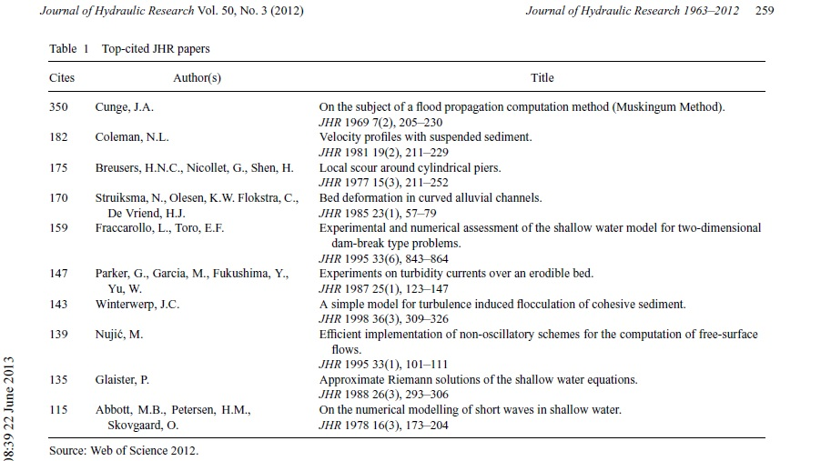

Home
H_sim-2D
Über uns
Referenzen
Projektliste
Vorträge/Artikel
Ausgewählte Projekte
Kontakt
GER
/
EN
H_SIM-2D
Das Modell für die Wasserwirtschaft
Genau, robust und sehr schnell
Vorträge an Fachtagungen, Workshops und Konferenzen:
1st Int. Conf. on Hydro-Science and -Engineering, Washington, ed. by Sam S.Y. Wang, 1993. (Invited speaker).
CADAM Workshops, Concerted Action on Dambreak modelling, Workshops; 1998. - 2000., Brüssel, München, Wallingford.
ÖWAV-Seminar, 26.-27. Februar 2003; Fließgewässermodellierung – von der Ein- zur Mehrdimensionalität, Univ. für Bodenkultur BOKU Wien.
DVWK Seminar „Numerische Simulationsmodelle für Fließgewässer“; 12./13. Mai 2003. in Stein bei Nürnberg.
3D-Forum Lindau, Die Stadt im Computer: Erfahrungen und Anwendungen mit einem präzisen Laser-DHM im kommunalen Bereich, C. Bichl, M. Nujic, Lindau 2003.
DWA Fachseminar „Numerische Simulationsmodelle für Fließgewässer“; 14./15. März 2005. Dortmund.
SUMAD Treffen „Sustainable Use and Managment of Alluvial Plains in Diked River Areas“, Internationales EU Projekt, Ingolstadt / März 2005., Graz / Juni 2005.
Workshop „Anwendung und Grenzen physikalischer und numerischer Modelle im Wasserbau; Technische Universität München; Versuchsanstalt Obernach, 29.09 und 30.09.2005.
DWA Landesverbandstagung Bayern, Neu Ulm 2005: Möglichkeiten und Grenzen von 2d-Modellen, Dr.-Ing. Marinko Nujić, Rosenheim.
DWA AG WW 2.4 Feststofftransportmodelle; Seminar „Feststofftransportmodelle“, 2011 Fulda.
2. Darmstädter Ingenieurkongress Bau und Umwelt, „2d-Simulation von Strömung und Sedimenttransport in Flüssen“; Anwendungsmöglichkeiten und Grenzen; Darmstadt, 2013.
Anwendertreffen HYDRO_AS-2D, Aachen 2004.
Anwendertreffen HYDRO_AS-2D, München 2010.
Anwendertreffen HYDRO_AS-2D, München 2014.
HDM – Hrvatsko društvo za mehaniku; Prezentacija modela za proračun plitkih voda; Fakultet strojarstva i brodogradnje Sveučilišta u Zagrebu, 05. 2016.
HDM – Hrvatsko društvo za mehaniku; Prezentacija modela za proračun plitkih voda; Gradjevinski fakultet Sveučilišta u Rijeci, 12. 2016.
HFD, Hrvatsko fizikalno društvo, Numeričko modeliranje strujanja u rijekama i jezerima, Samobor, 08.2018.
Veröffentlichungen
BECHTELER W., NUJIĆ M., SATTEL H., SCHÄTZ K.H., TASDEMIR A.; Comparison between Experimental and Calculational Results for a Millitary Ferry-Boat (in German), Tagungsband 7. Arbeitstreffen BMWg Rü T III 1, Universität der Bundeswehr München, 1991.
Bechteler W., Kulisch H., Nujic M.: 2-D Flooding Waves - Comparison between Experimental and Calculated Results, 3rd Int. Conf. on Flood and Flood Management, Florence, 24-26 November 1992.
BECHTELER W., NUJIĆ M., OTTO J.A.; Program Package FLOODSIM and its Application, 1st Int. Conf. on Hydro-Science and -Engineering, Washington, ed. by Sam S.Y. Wang, 1993. (Invited speaker)
Bechteler W., Nujic M., Otto A.J.: Zweidimensionale Simulation der Ausbreitung von Flutwellen, Wasserwirtschaft, Nr. 11, November 1993.
Bechteler W., Nujic M., Otto J.A.: An Analysis of Flood Propagation using Program Package FLOODSIM, Speciality Conference on Modelling of Flood Propagation over Initially Dry Areas, 29-30 June 1994, Milan, Italy.
Nujic M.: Efficient Implementation of Non-oscillatory Schemes for the Computation of Free-surface Flows, Journal of Hydraulic Research, 33(1), 1995. (cited 139 times up to 2012.)
Nujic M.: Discussion of the paper 'Finite Volume Two-dimensional Unsteady-flow Model for River Basins' presented by D.H. Zhao, H.W. Shen, G.Q. Tabios III, J.S. Lai and W.Y. Tan, J. Hydr. Engrg. ASCE, Nr.1,1996.
Bechteler, W., Nujic, M. (1996): 2D Simulation der Verlandung einer Talsperre durch Schwebstoffe. Intern. Symposium, Verlandung von Stauseen, Mitt. Nr. 143, VAW, ETH Zürich.
Bechteler W., Nujic M.: 2-D morphologische Simulation einer Flußaufweitung, Darmstädter wasserbauliches Kolloquium, Mitteilungsheft Nr. 98 des Instituts für Wasserbau und Wasserwirtschaft, TH Darmstadt, 1997.
Nujic M.: Dam-break Flood-wave Propagation using the Program Package FLOODSIM, Edt. Hiver/ Zech, CADAM Workshop, Brüssel, 21-22 June 1997.
Bechteler W., Nujic M.: Predicting Reservoir Sedimentation with 2d-Model FLOODSIM, Int. Journal of Sediment Research, Vol. 13, No. 1, 1998.(IF 1,298)
Nujic M.: Praktischer Einsatz eines hochgenauen Verfahrens für die Berechnung von tiefengemittelten Strömungen, Mitteilungen des Instituts für Wasserwesen der Universität der Bundeswehr München, Nr. 62 / 1998.
BECHTELER W.. NUJIC M .: Isar-Plan München - Numerische Simulation. Wasserwirtschaft Nr. 11, 2000.
Bechteler, W., Hartmann, S., Nujic, M. und S. Wieprecht: Modellierung dynamischer Prozesse an der unteren Salzach. Österreichische Wasser- und Abfallwirtschaft 5/6 (2000).
Nujic M.: Vorstellung und Diskussion des zweidimensionalen Strömungsmodells HYDRO_AS-2D, ÖWAV-Seminar, 26.-27. Februar 2003; Fließgewässermodellierung – von der Ein- zur Mehrdimensionalität, BOKU Wien, 2003.
Schätzl, P. and M. Nujic (2004). Kopplung von FEFLOW mit dem 2D-hydrodynamischen Modell HYDRO_AS-2D (Fa. Nujic). WU-Tagungsberichte 69-74.
Nujic M., Elsner T., Eidelsburger W.: Schwebstoffverlandung in den Donauvorländern unterhalb der Staustufe Vohburg, Wasserwirtschaft 3 / 2006.
Stephan U., Nujic M.: Physikalische und numerische Strömungsmodellierung – Vorteile und Grenzen, Wasser & Abfall, Okt. / Nov. 2005.
Stephan, U.; Nujic, M. (2005): Physical and a 2d-modeling of a curved and stepped spillway. XXXI IAHR Congress, Seoul/Korea, Theme D, September 11-16, 2005, p. 2644-2653.
NUJIĆ, M. (2003b): Vorstellung und Diskussion des zweidimensionalen Strömungsmodells HYDRO_AS-2D, in Wiener Mitteilungen, Band 18, S.1-11
NUJIĆ M. (2003c): ÖWAV-Seminar, 26.-27. Februar 2003; Fließgewässermodellierung – von der Ein- zur Mehrdimensionalität, BOKU Wien
NUJIĆ M. (2003d): Numerische Simulationsmodelle für Fließgewässer (Beiträge zum Seminar am 12./13. Mai 2003 in Stein bei Nürnberg) Heft 03. 03, Kapitel 7, Hydrologische Wissenschaften / ATV-DVWK
Sopta, Luka; Nujić, Marinko; Kranjčević, Lado; Holjević, Danko; Plišić, Ivica.
Mathematical Modeling of Flow in Lower Part of Rjecina River
/ Proceedings of International Symposium on Water Management and Hydraulic Engineering. Zagreb, 1998. 183-192 (lecture,international peer-review,published,scientific).
Bücher
Hochwasser-Handbuch - Auswirkungen und Schutz (2001), Heinz Patt et al., 593 str., Springer-Verlag Heidelberg, ISBN 978-3-540-67737-6; (co-autor).
Weitere Veröffentlichungen
Nujic M.: LASER_AS-2D, ein Programm für die automatische Ausdünnung von Laserdaten und Netzerstellung für die 2d- Abflußsimulationen, Benutzerhandbuch, Rosenheim 2006.
Sopta, Luka; Nujić, Marinko; Kranjčević, Lado; Holjević, Danko; Plišić, Ivica.
Mathematical Modeling of Flow in Lower Part of Rjecina River
// Proceedings of International Symposium on Water Management and Hydraulic Engineering. Zagreb, 1998. 183-192 (predavanje,međunarodna recenzija,objavljeni rad,znanstveni).
Sopta, Luka; Nujić, Marinko; Kranjčević, Lado.
Zweidimensionales Strömungssimulation für die Polder Altenheim I und II
, 1998.(znanstvena studija).
Sopta, Luka; Nujić, Marinko; Kranjčević, Lado.
Mathematical modelling of the flood protection plan of the Isar area in the southern part of city of Munich
, 1998. (znanstvena studija).
Sopta, Luka; Nujić, Marinko; Kranjčević, Lado.
Mathematical modelling of the renaturalisation plan of the Isar area in the southern part of city of Munich
, 1998. (znanstvena studija).
Sopta, Luka; Nujić, Marinko; Kranjčević, Lado; Vuković, Senka; Plišić, Ivica.
Matematički model poplavljivanja donjeg toka Rječine
, 1998. (studija za hrvatske vode-zagreb).
